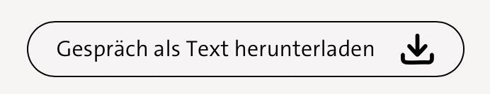

Danke, dass du dir Zeit nimmst!
Du nutzt gleich eine KI-Assistenz, die neue Gesetze erklärt. Im Anschluss beantwortest du noch ein paar Fragen zu deiner Erfahrung damit – es geht dabei nicht um Wissen oder Inhalte, sondern nur um deinen Eindruck.
ca. 10-15 MinutenWer und wofür
Ich bin Valerie Pfeiffer, Masterandin an der Hochschule für Angewandte Wissenschaften Hamburg. Deine Angaben nutze ich nur für diese Masterarbeit – dort stelle ich alle Daten anonymisiert dar.
Deine Kontaktdaten & Rechte
Deine Kontaktdaten nutze ich ausschließlich für ein mögliches, freiwilliges Nachgespräch. Deine Teilnahme insgesamt ist freiwillig, du kannst sie jederzeit abbrechen und die Löschung deiner Daten verlangen (valerie.pfeiffer@haw-hamburg.de).
Speicherdauer
Deine Daten werden bis zum Abschluss der Arbeit gespeichert. Die Zustimmung dazu bestätigst du als erste Frage in einem Formular am Ende der Befragung.
Du siehst gleich ein Chat-Fenster: eine KI, die dir neue Gesetze erklärt.
Das hier ist nur, um dir einen kurzen Überblick zu geben. Direkt über dem Chatfenster auf der nächsten Seite kannst du die Anleitung auch nochmal ausklappen.
Schritt 1
Wähle eines der vorgegebenen Themen aus.
Schritt 2
Klicke auf „KI-Assistenz starten“ und stimme den Nutzungsbedingungen zu.
Schritt 3
Frag einfach drauflos. Du kannst mit der KI schreiben oder sprechen. Es gibt kein richtig oder falsch, und kein bestimmtes Zeitlimit.
Schritt 4
Ganz wichtig: Bitte lade am Ende der KI-Interaktion dein Chatprotokoll herunter.
Unten in der Anwendung, mittig.

Schritt 5
Beantworte die Fragen im Umfrageformular.
Schritt 1
Wähle eines der vorgegebenen Themen aus.
Schritt 2
Klicke auf „KI-Assistenz starten“ und stimme den Nutzungsbedingungen zu.
Schritt 3
Frag einfach drauflos. Du kannst mit der KI schreiben oder sprechen. Es gibt kein richtig oder falsch, und kein bestimmtes Zeitlimit.
Schritt 4
Ganz wichtig: Bitte lade am Ende der KI-Interaktion dein Chatprotokoll herunter.
Unten in der Anwendung, mittig.
Schritt 5
Beantworte die Fragen im Umfrageformular.
Klicke auf den Button, um das Formular zu öffnen. Dort findest du auch die restlichen Fragen zu deiner Erfahrung.
Ich schreibe gerade an meiner Masterarbeit und teste dafür eine KI-Assistenz, die neue Gesetze erklärt.
Das hier ist noch ein Pretest, bevor die eigentliche Befragung startet – ich würde mich sehr freuen, wenn du mitmachst.
Es wäre toll, wenn du bis Montagabend, 17. August, dazu kommst.
Worauf es besonders ankommt
Nutze im Chatbot das Herunterladen-Symbol, um dein Gespräch als Datei zu sichern. Die Datei brauchst du gleich für das Formular.
Die KI kann eventuell noch ein paar Sekunden nachsprechen, das ist normal – du brauchst darauf nicht zu reagieren.